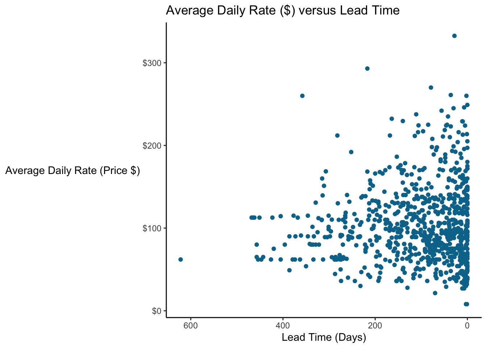
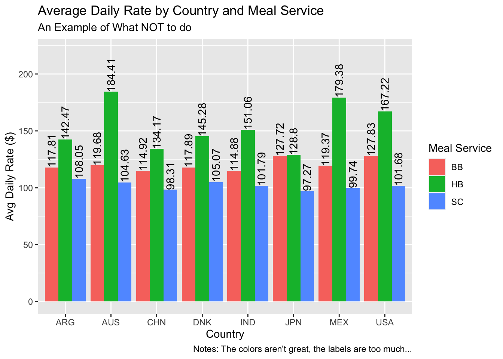

4 Design Fundamentals

4.1 Visual Perception Facts
We do not attend to everything we see.
Our eyes are drawn to familiar patterns.
Memory plays an important role in human cognition, but working memory is limited.
4.2 Color Theory
Color plays a critical role in how we view and perceive the world.
Contrast is [DEFINITION] and is the most important consideration in data visualizations.
4.2.1 Color and Accessibility
It’s important to recognize that not everyone perceives color the same way. Many companies and government agencies mandate that all documents be accessible to individuals who are colorblind, which you can easily do with a good palette of clearly distinguished colors. Such palettes don’t rely on hue alone but also contrast. There are at least three good reasons to use an accessible palette:
Your visualizations will be accessible to everyone, regardless of how they perceive color.
Good palettes are easier to interpret for everyone.
Your visualizations will be interpretable when people print them on B&W printers!
Many organizations have an official brand guide with a standard color palette. The brand colors for UMN are shown below.
The UMN brand colors.
4.2.2 Consistency
Colors should be consistent across plots–they should mean (roughly) the same thing everywhere they appear.
barplot <- booking_data %>%
filter(market_segment %in% c("Direct", "Corporate")) %>%
group_by(market_segment) %>%
summarize(adr = mean(adr)) %>%
ggplot(aes(x = reorder(market_segment, -adr), y = adr, fill = market_segment)) +
geom_bar(stat = "summary", fun = "identity") +
scale_fill_manual(values = c("Direct" = "#7a0019", "Corporate" = "grey50")) +
scale_y_continuous(labels = scales::dollar) +
labs(x="Market Segment",
y = "Avg Daily Rate ($)",
title = "Mean ADR ($) by Market Segment") +
theme(legend.position = "none", # Hide legend
panel.background=element_blank(),
panel.grid.minor=element_blank(),
panel.grid.major.y=element_blank(),
panel.grid.major.x=element_line())
scatterplot <- booking_data %>%
sample_frac(size = 0.01) %>%
filter(market_segment %in% c("Direct", "Corporate")) %>%
mutate(lengthofstay = stays_in_week_nights + stays_in_weekend_nights) %>%
filter(lengthofstay < 15) %>%
ggplot(aes(x = lengthofstay, y = adr, color = market_segment)) +
geom_jitter() +
scale_color_manual(values = c("Direct" = "#7a0019", "Corporate" = "grey50")) +
scale_x_continuous(breaks = scales::pretty_breaks()) +
scale_y_continuous(labels = scales::dollar) +
labs(color="Market Segment",
y = "Avg Daily Rate ($)",
x = "Length of Stay (days)",
title = "Mean ADR ($) by Market Segment") +
theme(panel.background=element_blank(),
panel.grid.minor=element_blank(),
panel.grid.major.y=element_blank(),
panel.grid.major.x=element_line(),
legend.position = "top",
legend.key = element_rect(fill = "white"))
grid.arrange(barplot, scatterplot, nrow = 1)
4.2.3 Red-Yellow-Green “Stoplight” Scales
Scales using red, yellow and green (or just red and green) are commonly employed to highlight things that are going well (green) or poorly (red). This isn’t necessarily bad, but something to be mindful of.
There can be cultural differences in how these colors are perceived.
Also, be careful about referring to employee or team performance with these scales. It sends a clear good/bad judgment on their performance when they may actually be performing to standard or were impacted by circumstances out of there control.
Consider the graph below.
### Employee graph with good/bad performance
employee_sales <- tibble(employee = c("A", "B", "C", "D", "E", "F", "G"),
sales = c(100, 105, 138, 140, 150, 151, 155),
color = c("Below", "Below", "Below", "Above", "Above", "Above", "Above"))
employee_sales %>% ggplot(aes(x = employee, y = sales)) +
geom_point(aes(color = color), size = 5) +
scale_color_manual(values = c("Below" = "#7a0019", "Above" = "#58a618")) +
geom_hline(yintercept = 110, linetype = "dashed") +
geom_hline(yintercept = 140, linetype = "dotted") +
geom_label(aes(x = "F", y = 110, label = "Sales Target")) +
geom_label(aes(x = "F", y = 140, label = "Median Sales")) +
scale_y_continuous(labels = scales::dollar) +
labs(y = "Sales ($)",
x = "Employee Name",
title = "Sales ($) by Employee") +
theme(panel.background=element_blank(),
panel.grid.minor=element_blank(),
panel.grid.major.y=element_blank(),
panel.grid.major.x=element_line(),
legend.position = "none")
4.3 Preattentive Visual Attributes
Cognitive psychology has paid a lot of attention to the concept of human attention (that’s a great sentence!). A recurring idea is that certain visual features are so distinctive and stick out such that we don’t need to actively pay attention to them, so they are preattentive features. Whether this is actually true or holds absolutely is the subject of some debate, but it’s clear that these features, properly applied, can help people notice and and process information quickly.
Preattentive attributes can be grouped in four main categories:
Color: One can spend their entire career on color theory. Two main attributes to consider are hue and intensity. Hue is where on the color wheel you are (roughly, the difference between blue and orange). Intensity is the strength of the color. Color can be used to draw attention, but it can also detract; too many colors can quickly overwhelm the viewer such that they become meaningless or the differences are too subtle.
Form: Form covers shape, size, orientation, and length. Line length (and width) can be very precise (ie, readers can see very slight differences in line lengths on a bar chart).
Spatial Arrangement: Humans will naturally interpret groups of objects and compare their placement to other objects. You may have heard of the Gestalt principles; the Gestalt “Law of Proximity” states that people will tend to group objects that are nearby. 2D arrangement is perhaps one of the most “precise” attributes; viewers will notice very subtle differences between point locations in a scatterplot.
Movement: Objects can move in space (as in animation) or they can flash. This is a very strong preattentive attribute and may dominate everything else. Use it sparingly.
Preattentive attributes, used well, drive the narrative for viewers and help them very quickly interpret what you’re telling them. You can focus attention. Used poorly, they can overwhelm the viewer who will have to wade through lots of information. When we don’t pay attention to these attributes, we can cause problems. For example, if elements in a dashboard aren’t aligned, the viewer might perceive that difference (keying on the position)…instead of the data they’re paying attention to the chart’s design. The idea is that the design should get lost and the viewers should instead be sucked into the data.
4.4 Tufte’s Data Visualization Principles
Edward Tufte’s The Visual Display of Quantitative Information is classic book on data visualization. Among the many ideas he proposes, two key concepts stick out for me: chartjunk and graphical integrity.
4.4.1 Chartjunk
Chartjunk is a visual element that is not necessary to convey the meaning of the graph. Things like shadows, gridlines, icons, labels, gradients, etc can all be chartjunk. A closely related concept is the data-to-ink ratio. How much data are you displaying vs how much ink are you using?
The core idea is to present your data in a clear, compelling manner, without all of the extra elements that can distract the user (and use all their printer toner!). The example shows two graphs…one with and one without a lot of chartjunk.

What did we strip away? All the lines, except the baseline under the graph (I think it looks nice…it helps “ground” the viewer. The background colors (though I sometimes use a light color behind my plots). The word “hotel” in front of the legend. The whole Y axis, even!
4.4.2 Graphical Integrity
Graphical integrity implies that the representation of a number is proportional to the number. In other words, if one value is twice as large as another, its representation should be twice as large (assuming it’s not on a log scale). Differences in elements (e.g. line length, color) should represent differences in the data. Scales should be consistent (e.g., not switching between years and months on the same graph).
Note: You should almost never put things on a log scale if they’re being viewed by a general audience. What appears to be linear growth on a log scale is actually exponential growth and people struggle with that.
3d pie graphs often violate this principle. Take a look at this pie chart showing the number of bookings by hotel. About 90% of the visual field is occupied by blue, representing the City Hotel. But most of the blue we see is actually just the 3D rotation.
A bad 3D pie graph can misrepresent the numbers it’s supposed to display.
But how many of the bookings were actually made at the City Hotel, and how many were at the Resort Hotel? A bar graph or waffle chart will more accurately reflect these ratios. These chart types show us that about 1/3 of the bookings were at the Resort Hotel and 2/3 at the City Hotel. Or that the City Hotel had about twice as many bookings.
### Make a bar chart and tile map
# Make bar chart
barchart <- ggplot(booking_data, aes(x = hotel)) +
geom_bar(aes(fill = hotel)) +
scale_fill_manual(values = c("City Hotel" = "#00759a",
"Resort Hotel" = "grey70")) +
scale_y_continuous(labels = scales::label_comma()) +
labs(x = "",
y = "Number of Bookings",
title = "Hotel Bookings \n (Option 1: Barchart)") +
theme(axis.line = element_line(color = "black"),
panel.background=element_blank(),
panel.grid.minor=element_blank(),
panel.grid.major.y=element_blank(),
panel.grid.major.x=element_blank(),
legend.position = "none",
plot.title = element_text(hjust = 0.5))
# Waffle Map
library(waffle)
waffle <- booking_data %>%
group_by(hotel) %>%
summarise(bookings = n()/1000) %>%
mutate(hotel = relevel(as.factor(hotel), "Resort Hotel")) %>%
ggplot(aes(fill = hotel, values = bookings)) +
geom_waffle(n_rows = 10,
size = 0.5,
colour = "#ffffff",
flip = TRUE,
make_proportional = TRUE) +
scale_fill_manual(values = c("City Hotel" = "#00759a",
"Resort Hotel" = "grey70")) +
labs(fill = "",
title = "Hotel Bookings \n (Option 2, Waffle Chart)") +
coord_equal() +
theme_minimal() +
theme_enhance_waffle() +
theme(plot.title = element_text(hjust = 0.5))
# Insert the two plots as one figure
grid.arrange(barchart, waffle,
nrow = 1)
It can be tempting to skew things to create a clean visualization. Taking a map or geographical visualization as an example, some simplifications are okay (e.g. smoothing the borders of a map, omitting rivers, etc). But if you go too far, you risk creating a visual that is misleading. Look at the (real) infographic or stylized map below showing hospitalizations for Covid-19; this “map” implies geographical borders that don’t exist.
As a rule, don’t imply relationships that don’t exist (e.g. geographical borders) or erase relationships that do exist. Don’t let design overrule substance.
See the stylized map on the left indicating hospitalizations of Covid-19 compared with the true geography. Note that Rhode Island does not border New Hampshire, and DC does not border Connecticut.
4.5 15 Second Test
Visualizations should be able to more or less stand on their own (perhaps with some footnotes). I shouldn’t need to read the report to understand what a visualization is showing me. And ideally, it shouldn’t take very long at all for me to understand what a graph is showing me.
Let’s make a quick visualization showing the number of completed stays, by hotel, over time.

You can see it, right? We see the annual pattern of bookings by two hotels over two years or so. Which hotel seems to have seasonality in demand?
4.6 Fixing Cluttered Visualizations
Sometimes, it feels like there’s no way to keep a visualization clean and intuitive. “But there’s too much I need to include, and I can’t drop any of it!” Here are a couple of strategies to try.
4.6.1 Facet to make Multiple Visualizations
Let’s look at the trend in sales of meal packages over time by hotel. Meals are high margin, so we want more guests to buy them. By looking at the percentage of guests getting meals, we can assess how well our agents are upselling.
Meal Service Classifications
- SC: No Meals Included
- BB: “Bed and Breakfast” (1 Meal per Day included in rate)
- HB: “Half Board” (2 Meals per Day included in rate)

What’s wrong with this figure? It’s cluttered, and hard to follow which line is which. There’s also no clear grouping of the lines by hotel. I could switch the colors, or add some kind of dashes, but then I’m asking people to track two things (color and pattern) instead of doing what I want them to do…actually engage with the data.
Let’s fix this by faceting, splitting the graph into smaller separate graphs, broken up by some other variable. In ggplot, we add a facet with a facet_wrap() and facet_grid() functions. I usually use facet_grid() because it gives more control and lets you facet by more than one variable, but you can use whichever makes the most sense.

Now we can see very clearly that there’s been a recent increase in the percentage of bookings with HB (“half-board”) service…the most profitable class. Looks like recent upselling efforts are working and the sales staff should be commended.
4.6.2 Switch to a Table
It may seem odd that the recommendation in a class about visualizations is, “Don’t make this a visualization.” Going back to our hotel_bookings.csv data, suppose we are having a meeting to discuss the average daily rate quoted to guests from different countries by the meal service (meal) they request. Just $1 makes a big difference times thousands of guests a year, so we want exact numbers to discuss in the meeting.

What’s wrong with this visual? The colors aren’t great, it’s very cluttered, and my eyes have to jump around, from the legend to the x-axis, and then up to the labels.
If you need to include many exact values, it’s time to consider a table. The purpose of visualizations is not to give the reader exact values for every observation at a particular point in time. It’s to clearly communicate a point, support intuition, and support comparisons. The table below (Table 4.1) shows the same information but in a much more accessible format.
| country | BB | HB | SC |
|---|---|---|---|
| ARG | 117.81 | 142.47 | 108.05 |
| AUS | 119.68 | 184.41 | 104.63 |
| CHN | 114.92 | 134.17 | 98.31 |
| DNK | 117.89 | 145.28 | 105.07 |
| IND | 114.88 | 151.06 | 101.79 |
| JPN | 127.72 | 128.80 | 97.27 |
| MEX | 119.37 | 179.38 | 99.74 |
| USA | 127.83 | 167.22 | 101.68 |